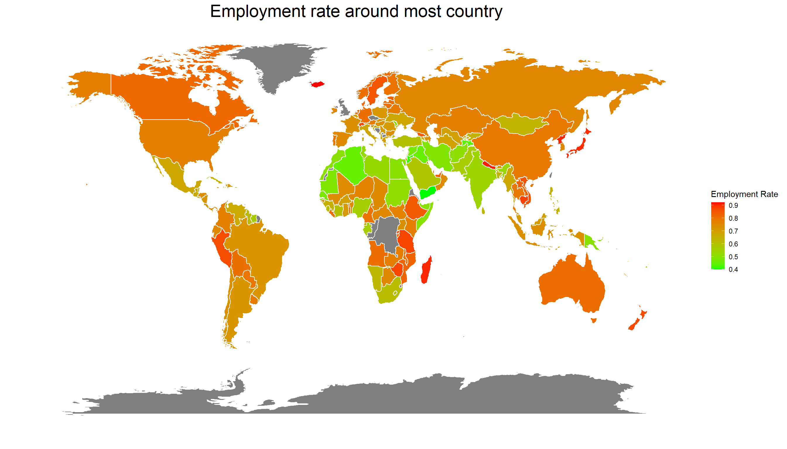
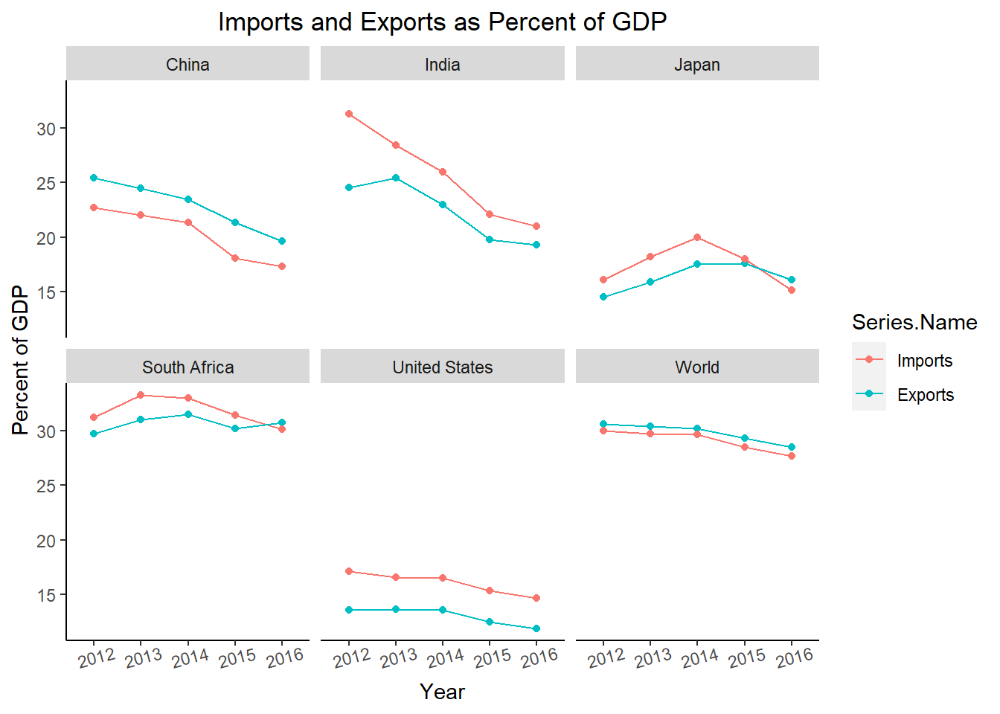
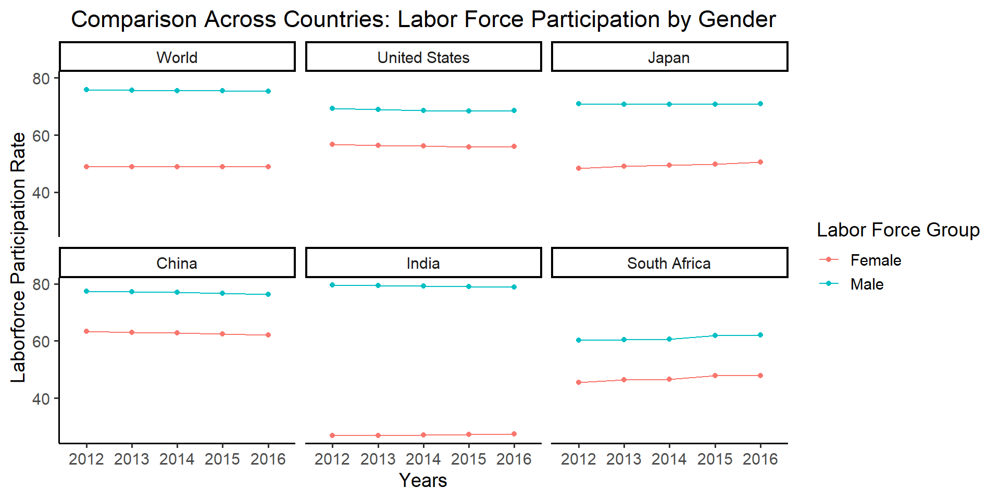

Chapter 5 Chapter 5 Results
5.1 Developed and Developing country
First we need to define developed countries and developing countries. A developed country is a country that has advanced technological infrastructure and high standard of living comparing to other less developed country, and those less developed countries are called developing countries. However, there is no specific standard for classifying developed country. In our project, we define a country with GDP per capita over than 12,000 dollar as a developed country and less than 12,000 dollar as a developing country.
Here is a part of plot showing the country’s GDP per capita in year 2012. We sort these countries by using cleveland dot plot. Countries which GDP per capita are lower than 12,000 dollar such as Brazil and Mexico are developing countries and countries such as Poland and Hungary are developed countries.
5.2 Population and labor force
5.2.1 Population structures between developing and developed countries

This graph provides a basic overview of population structure in these 5 different countries and the world overall. It also allows us to compare between different countries, and countries with the world. If we use world as the benchmark, we can see that the countries that are more developed such as US, Japan and China have higher percentage of older people and lower percentage of teenagers. India and South Africa comparably have heavier teenager population and lighter senior population. If their growth rate or birth rate do not change,labor market would potentially be effected in the future. A large proportion of older people in the population and smaller proportion of teenagers will potentially cause a shortage in labor force, which could then impact the overall economy. However, to make such conclusion, we will need more detailed breakdowns of the middle group to see which tail is heavier. It makes sense to have majority of the population to be within the range from 15 to 64 since it has the wildest range. But if we have detailed breakdowns of this group, we can definitely analyze further and infer the future impacts on workforce. Next, we will further explore the workforce:
5.2.2 Labor force Participation between developing and developed countries
Labor force participation rate is defined as the percentage of people who participate in work as of the total population. From this graph, we can see that China has been the highest in these five years among these countries and the world overall. United States overlaps with the world. However, the percent of people who can contribute to the job market has been declining for the past several years for China, which could be the result of increasing proportion of seniors in the population. Similarly, Japan has relative lower rate than the world average, which could also be explained by the population structure graph above. On the other hand, India and South Africa, the two countries that have higher proportion of teenagers and in-middle age groups, have only around half of the population working. While many factors can play a part in this, we can expect proportion to grow after 5 or 10 years since population of available workers will expand.
5.2.3 Gender analysis base on participation rate
If we take a deeper look into the contribution structure and compare the participation rates by genders, we can see from this graph that they vary across different countries by a lot. The specific gender group represents the proportion of working people in its gender group. While China, United States and South Africa show narrower gap between male and female, India has the widest gap followed by Japan. From this observation, whether a country has a larger or smaller gap between participation rates of genders does not depend on its developing state. Though wide gender gap for Japan and India could be explained by their cultural reasons, we can observe that male across these countries and the world overall has higher proportion of working people. If we were to narrow this difference between genders, there is definitely a lot of room to improve.
There are many factors beside the within country characteristics, so next we will look into economic factors and explore how they associate with the labor market.
5.3 Import and Export
Due to advancements in transportation and communications, international trade is becoming more and more common. As a result, imports and exports are key parts to any country’s economy. With very few exceptions, all countries are somewhat reliant on trading with others. Therefore, it is important that we investigate the imports and exports of the selected countries. First, lets take a look at the imports and exports as a percentage of GDP from 2012 to 2016.
5.3.1 Account for percent of GDP in developed and developing country

Generally, it looks like countries maintain a similar level of imports and exports every year. This makes sense, as countries would not want to incur a trade deficit by importing significantly more than they export. Furthermore, in general the amount of imports and exports worldwide are decreasing each year. The only exceptions are South Africa’s exports, which seem to be trending upwards, and Japan’s imports and exports trend upwards initially, but decrease in recent years. In addition, the three developed countries (China, Japan, and the United States) have a lower percentage of imports and exports than the other countries. This is surprising because these countries are known for importing and exporting many goods. Since the imports and exports are measured as a percentage of GDP, this likely means that these countries are able to produce much more domestically than they import and export.
5.3.2 How does imports and exports effect employment?
Some people worry that reliance on imports leads to higher unemployment, as some jobs end up outsourced to another country. To evaluate this claim, we will compare imports to the unemployment rate in each country, as well as the labor force participation rate.
It seems that the amount of imports has very little or no effect on the unemployment rate. In most of the countries, the unemployment rate doesn’t change much while the imports experience notable change. In South Africa, the unemployment rate actually increases when the percent of imports decreases. Also note that the labor force participation rates for all of these countries are relatively stable, so the unemployment rate is not affected by the amount of people looking for work. The only country where there may be a relationship is the United States. This could mean there is something unique about the United States where there is a relationship between these two variables, or this may just be a coincidence.
5.3.3 Comparing import and export variables together

There are a few interesting patterns we can see from this parallel coordinate plot. First, it seems that countries with low fuel exports have higher numbers of technology exports, while countries with low technology exports have high numbers of fuel exports. Notably, the countries with high fuel exports are developing countries, while the countries with high technology exports are developed countries. Also, countries with higher technology exports are countries with high labor force participation. One possible explanation for this is that the technology enables more people to get jobs i.e. people don’t need to spend time vacuuming the household if they own a Roomba. Also, it seems that none of these variables really correlate with unemployment, as most of the countries have similar unemployment rates, (South Africa being the only outlier).
5.4 Employment and Education
Here is a part of plot showing the country’s GDP per capita in year 2012. We sort these countries by using cleveland dot plot. Countries which GDP per capita are lower than 12,000 dollar such as Brazil and Mexico are developing countries and countries such as Poland and Hungary are developed countries.
5.4.1 World employment rate
Employment rate refers as the ratio of the number of person who is employed to the number of working population. In our project, we define the working population is a country’s population from age 15+ to 64, and the people in employment is the population of labor force. One important index that effects job market is education provided by different countries, In this part, we will focus on discovering the association between education and employment. First, we take a look at the brief employment rate in most countries in 2018.

The graph provides an overview of employment rate in most countries around the world. From the graph we could see that most developed countries and major economies have higher levels of employment rate. The areas of low employment rate are concentrated on middle Asia and north Africa. These countries have various reasons such as war, imbalances in economic structures, and the inequality of male and female. Countries located in South America and Southeast Asia maintain a middle employment rate around seventy percent.
5.4.2 Literacy and Employment
Literacy is the ability whether a person could read and write. Literacy is an important indicator of education. In this part, We will explore the association between education and employment by comparing the literacy rate and employment rate.
We could see four cluster in above contour plot. One concentrated cluster is around (0.7,99), which indicates most countries with high literacy ratea have acceptable employment rates. The contour line shows that the employment rate increases with the higher rates of literacy. However, there exist a few outliers that have distinctly lower literacy rates with high employment rates and high literacy rates with low employment rates. The plot also indicates that no country has high extremely employment rate but low literacy rate at the same time. Above results imply that there exists a positive association between literacy rate and employment rate.
5.4.3 Employment rate among different eduaction level
Diving deeper, we then compare how level of knowledge affects employment in developing and developed countries differently. We pick Brazil, Egypt, South Africa, USA and UK to do this comparison (The reason that we are not using China and Japan as our previous parts is that China and Japan are missing data both from year and education level). Among these countries, Brazil, Egypt and South Africa are developing countries, while UK and USA are developed countries. We will classify education into three levels, which is basic, intermediate, and advanced. Basic level is defined as schooling leads to basic reading, writing and mathematics skills. Intermediate level education refers to…Advance level education means all levels of colleges or universities and higher institutes.
According to this graph, all five countries, whether it is a developed country or not, share similar pattern that people with higher level of education are easier to be employed. All five countries have about 80 percent of employment rate with people who have an advanced education. Brazil has a higher employment rate in basic education and similar employment rate with intermediate and advanced education in 2012. However, as time past, the employment rate distribution of Brazil has changed to a similar ratio as other countries. This graph also indicates the how employment rate changes among different countries in 2012 to 2016. In Brazil, the employment of basic education drops dramatically in 5 years while other countries remains a similar rate. For intermediate education level, two developing countries, Brazil and Egypt, has a small drop over 5 years. The employment rate has a little fluctuation over these five years. We cannot judge whether developed countries have better employment rates at different levels of education according to these plots, since United States, the largest developed country, has a lower employment rate in all education level comparing with other countries.